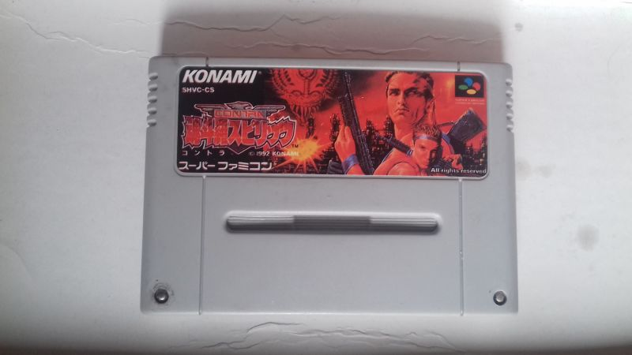
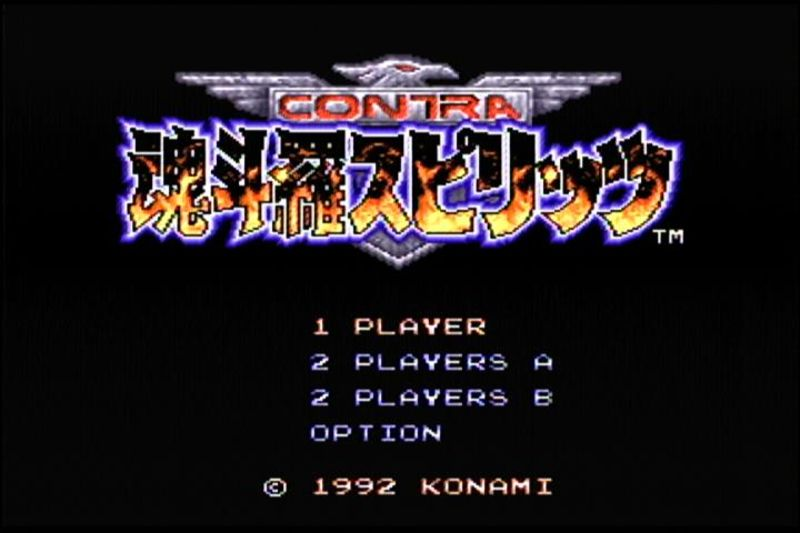

Contra 魂斗羅スピリッツ
Картридж практически полностью копирует оригинал, у меня даже были сомнения в том что это пиратский картридж, однако две детали всё таки его выдают:1) Полиграфия и качество изображения хуже, чем на оригинальном.
2) Немного более тусклое изображение.
3) Плата внутри использует бескорпусную технологию, что не свойственно лицензионным картриджам.
При этом винтики используются правильные, сзади нет выемок, а действительно отверстия, и сзади все надписи и клейма оригинальные.
Интересно также то, что на картридже используется две капли, то есть часто на пиратских картриджах СНЕС использовали одну каплю и микросхему, а здесь же микросхема заменена на бескорпусную, это может говорить о том, что этот пиратский картридж позднего производства, однако установить конкретную дату достаточно трудно, нет ни единой зацепки.
В любом случае, перед нами пирата с японской версии игры Contra Spirits, она же Contra 3 Alien Wars и она же Super Probotector.
Помимо японской версии в наших краях можно было купить и европейскую версию игры - Super Probotector, как лицензионную ( в магазине Dendy ), так и стороннюю пиратскую, которую вы также можете посмотреть в нашем музее.
Игра полностью работоспособная, и проходима. Естественно на японском языке.
Игра на картридже: Contra Spirits 魂斗羅スピリッツ
Дополнительные фото и описание к ним: